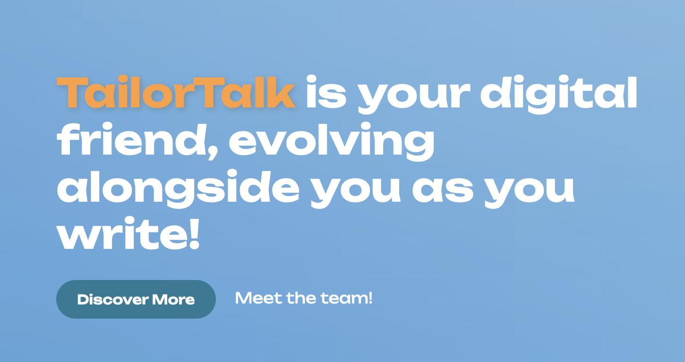

Overview ★
As the web developer for this student startup, I transformed their vision into a dynamic and user-friendly website. The project aimed to integrate AI into every step of the writing process, making creative writing more efficient and accessible.
